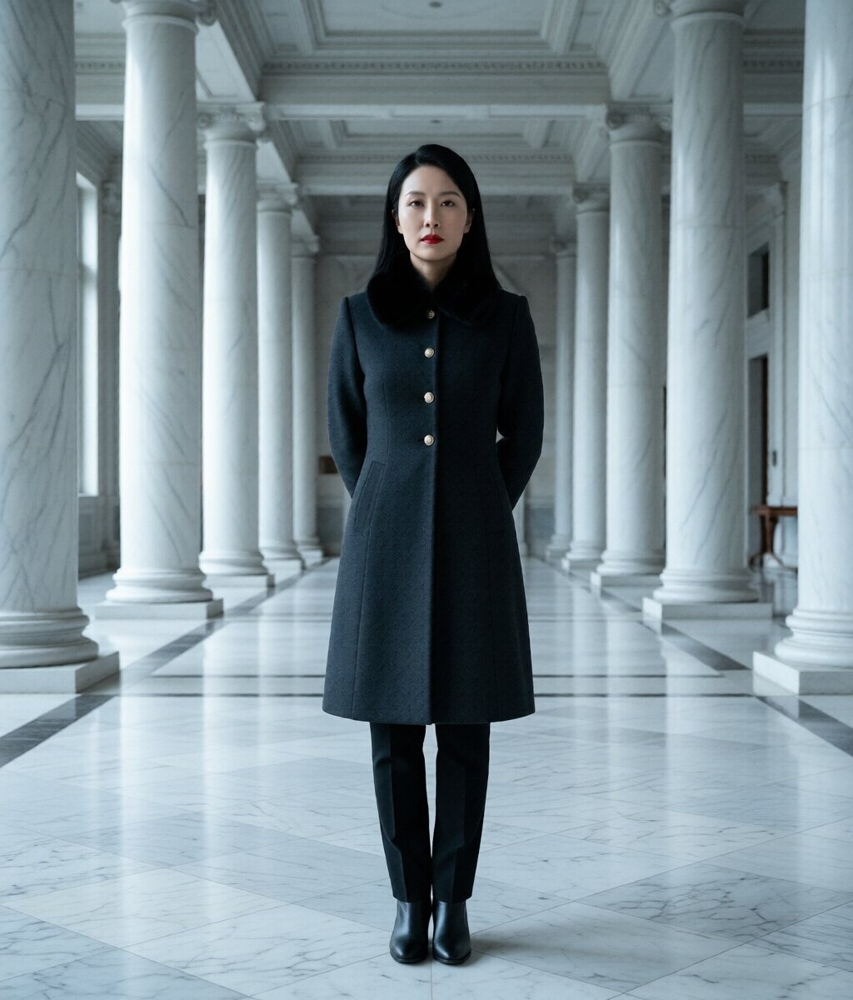
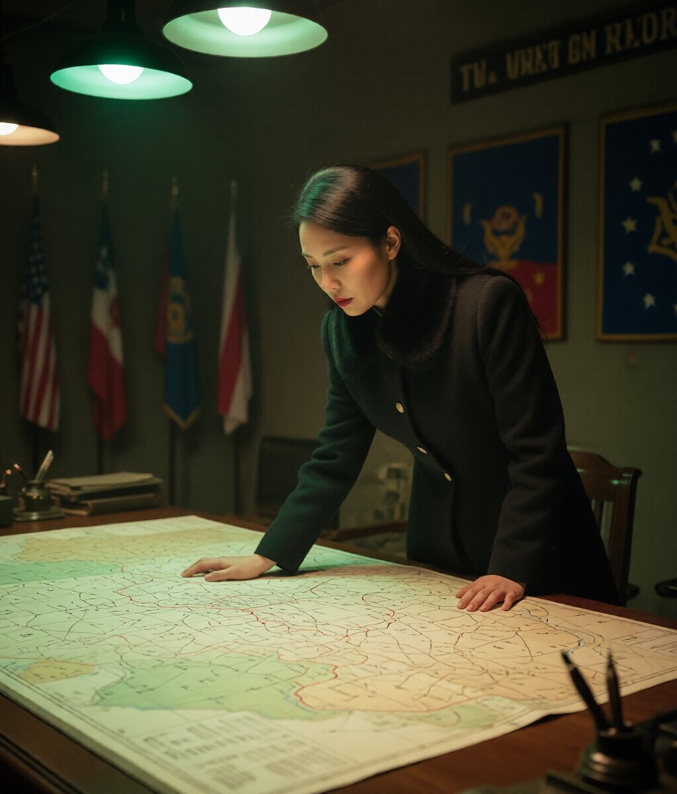
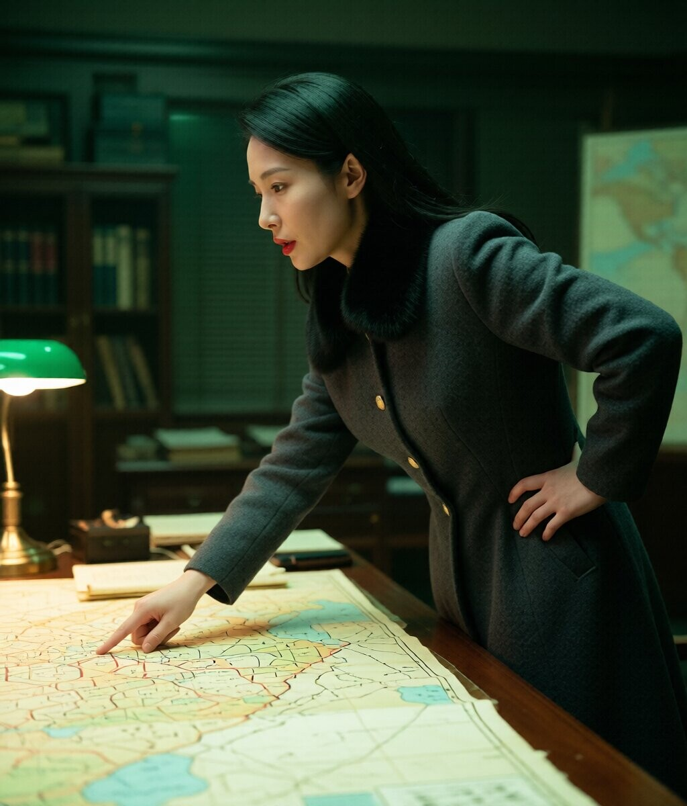
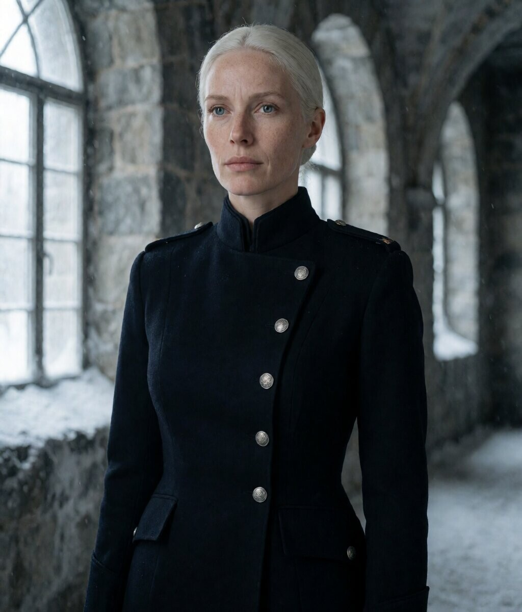
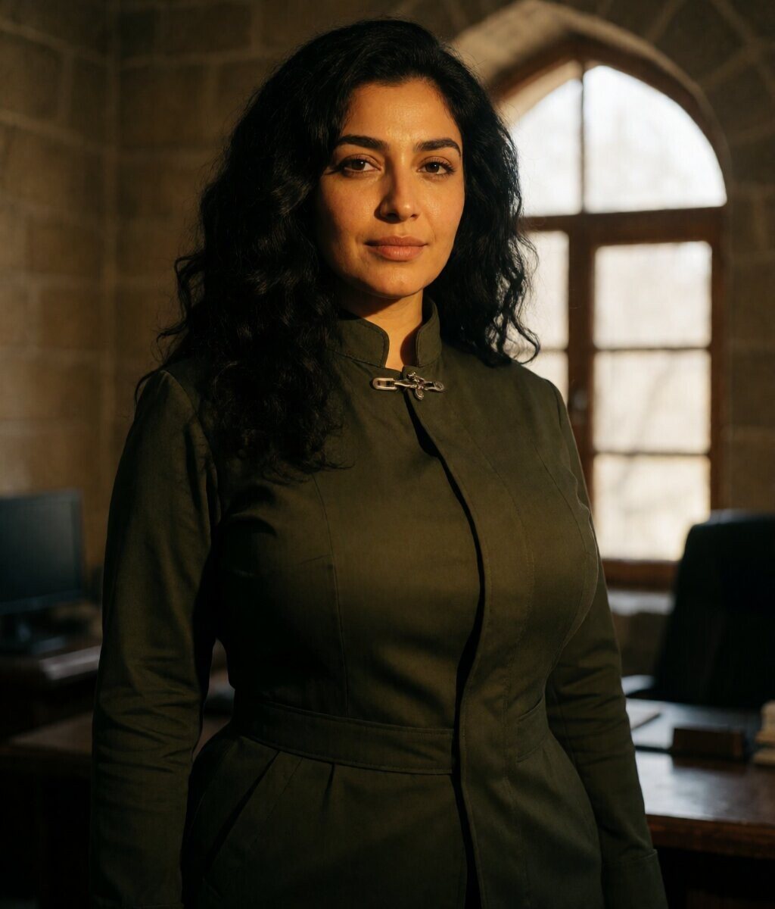
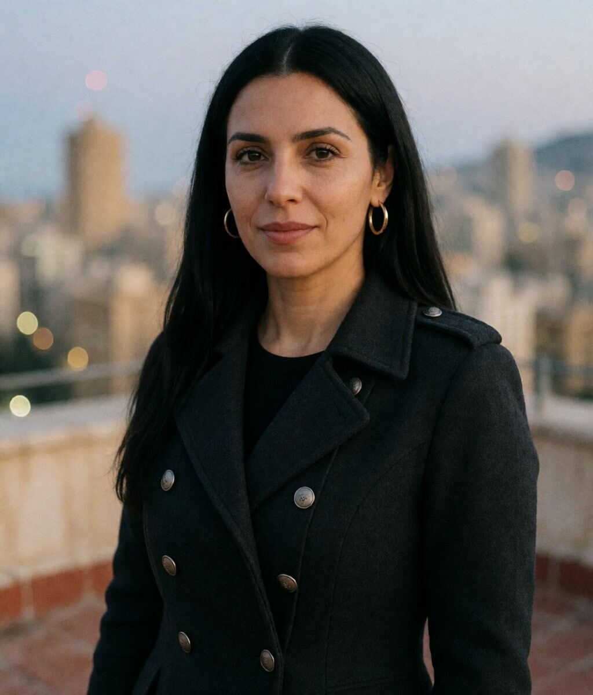
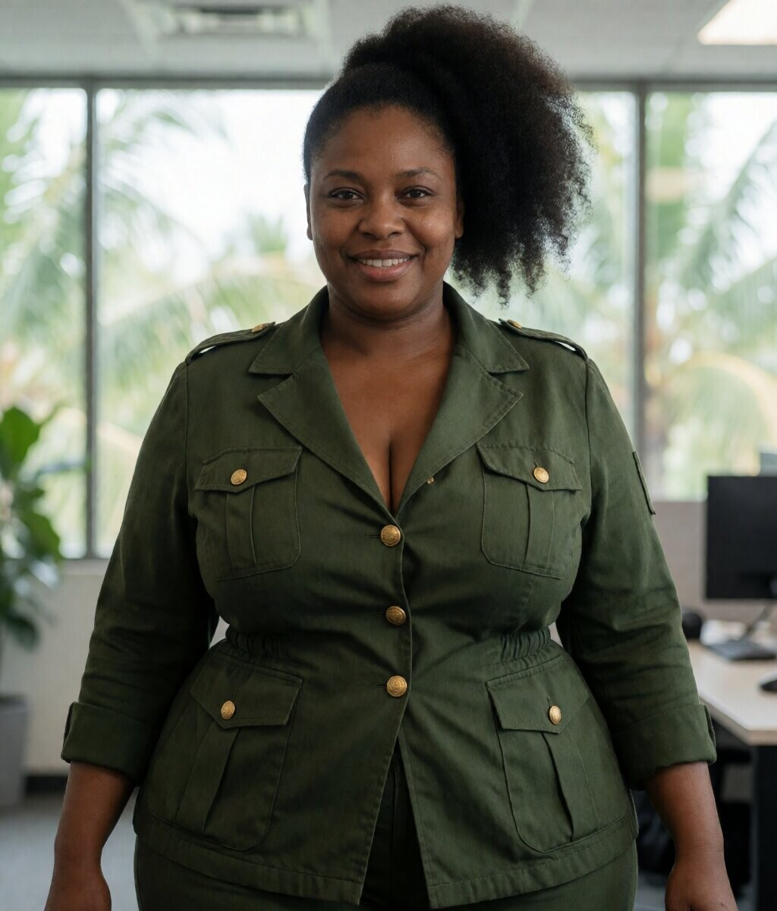
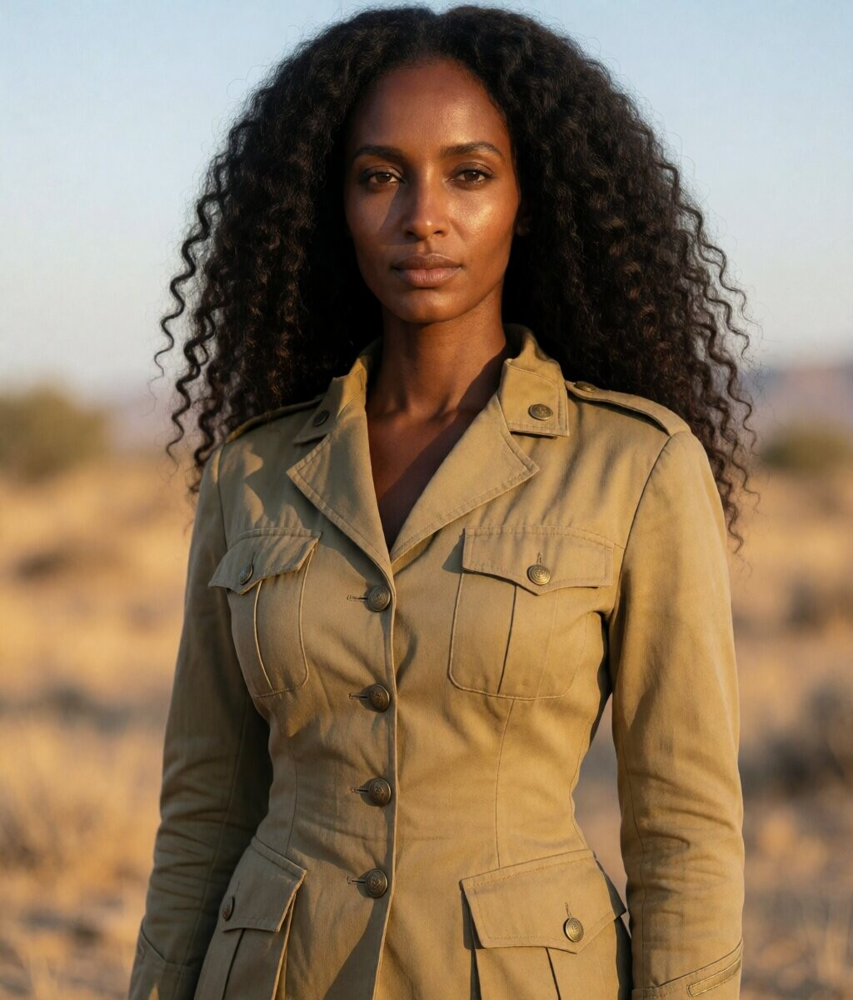

Chefs militaires — casting photoréaliste
Chef militaire. Élégance froide, pouvoir discret — inspiration Kim Yo Jong.



Colonel nordique. Blonde platine, features anguleux, stoïque. Navy double-breasted, corridor de pierre.

Tacticienne iranienne. Cheveux noirs ondulés, autorité discrète. Olive green, bureau de pierre, lumière chaude.

Officier libanaise. Cheveux lisses, sourire léger. Charcoal coat, toit de Beyrouth au crépuscule.

Colonel ouest-africain. High puff, courbes généreuses, sourire confiant. Dark green, or, lumière tropicale.

Officier somalienne. Boucles naturelles, long cou, regard perçant. Khaki désertique, golden hour.
